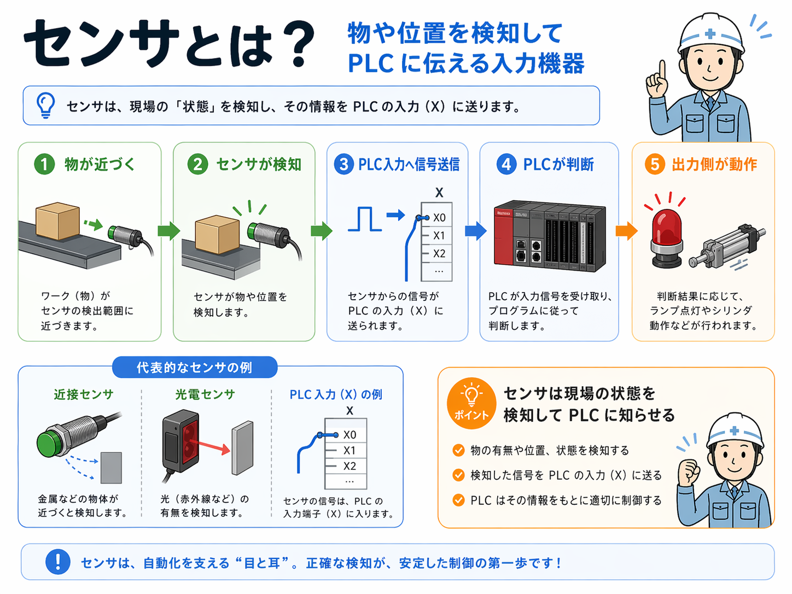
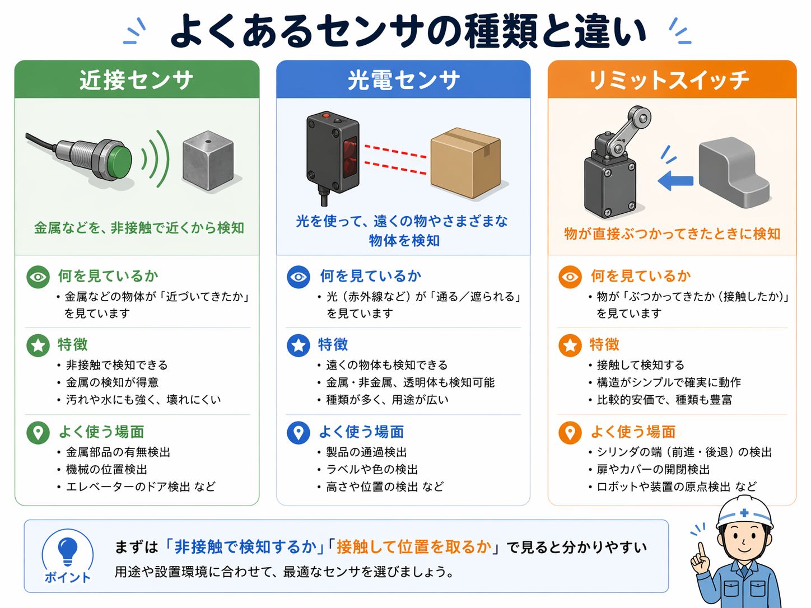

センサは現場の状態を検知して、PLCへ知らせる入力機器です
センサは、物があるかないか、位置が合っているか、何かが近づいたかなど、 現場の状態を検知してPLCへ伝える役目です。
つまり、PLCから見ればセンサは「今こうなっています」と知らせてくれる側です。 だから、入力機器として扱います。
ランプや電磁弁のようにPLCから動かされる機器ではなく、 PLCの判断材料になる信号を送る機器という見方が大事です。
センサ → PLC入力 → 判断 → 出力の流れで見ると分かりやすいです
センサ単体で見ても大事ですが、実務では センサの信号がPLCへ入って、その後どんな出力につながるか をセットで見ることが多いです。

- 物やワークが近づく、位置が変わる
- センサがそれを検知する
- センサ信号がPLC入力（X）へ入る
- PLCが条件に応じて判断する
- ランプやシリンダなどの出力側が動く
まずは近接センサ・光電センサ・リミットスイッチの違いを押さえると入りやすいです
センサといっても種類はいろいろありますが、最初はこの3つを押さえるとかなり入りやすいです。

近接センサ
金属などが近づいたことを非接触で検知します。位置検出や有無検出でよく使います。
光電センサ
光を使って物の有無や通過を検知します。遠めで見たい時や、金属以外も見たい時に使いやすいです。
リミットスイッチ
物が実際に当たって機械的に動くことで検知します。構造が分かりやすく、確実に位置を取りたい時に使います。
現場では「何を見たいのか」「どこに付いているか」で考えると整理しやすいです
センサの種類を覚えるだけより、現場で 何を見たくて、どこに付いていて、PLCへ何を伝えているか を見る方が理解しやすいです。
物の有無か、位置か、通過か、液面かをまず見ます。
近づいたことを見たいのか、実際に当てて位置を取りたいのかで分かれます。
X0、X1など、どの入力番地へ入っているかを見ると回路が追いやすくなります。
センサが入ったあと、何が動くのかまで見たいです。
PLCから見れば、センサは「判断材料を送ってくる入力側」です
PLCの中で自己保持やインターロック、タイマなどを動かす前提になるのが入力信号です。 その入力信号の元になるものの一つがセンサです。
だから、センサの記事は「入力と出力の違い」の次に読むとつながりやすいですし、 このあと近接センサや光電センサを個別記事に分ける時の入口にもなります。
センサでよくある疑問
A. 基本的には入力です。センサは現場の状態をPLCへ伝える側だからです。
A. 広い意味では同じく検知機器として扱えます。この記事では、入力機器として比較しやすいように並べています。
A. 何を検知したいのか、非接触か接触か、PLCのどの入力へ入るか、この3つから見ると整理しやすいです。
次に読むとつながりやすい記事
センサの基本が見えてきたら、次は入力と出力、PLC、ラダー図の見方と合わせて読むとつながりやすいです。